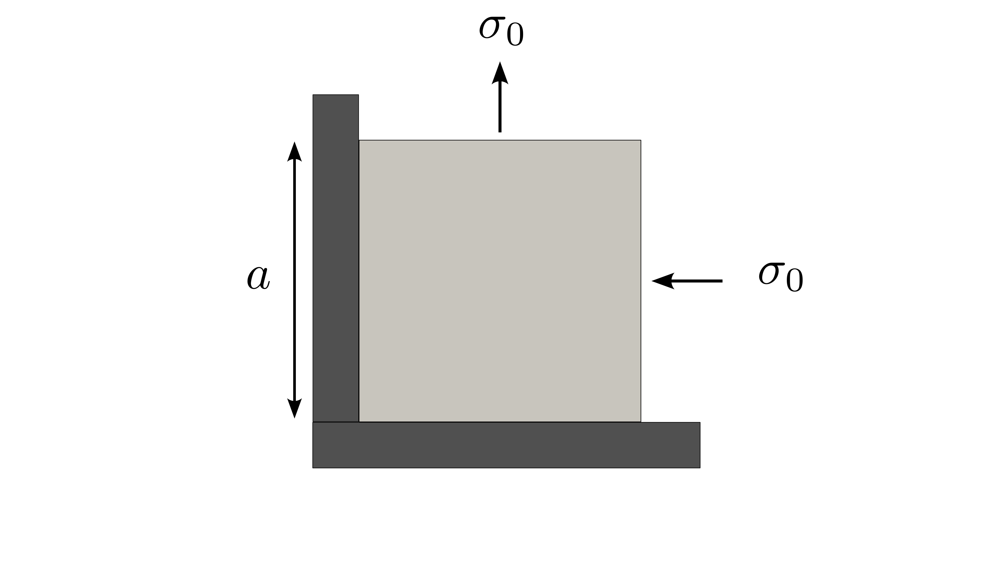
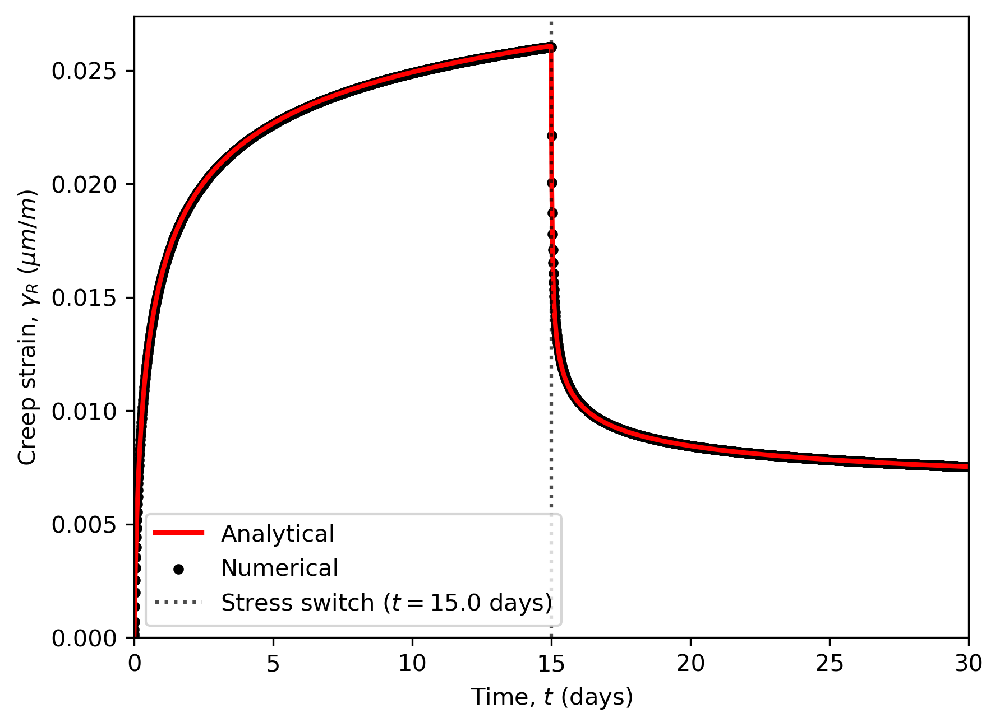

Modified Munson-Dawson viscoplastic model
This problem considers a squared medium subject to external stress leading to creep. The material deforms following the modified Munson-Dawson's viscoplastic constitutive model described in Azabou et al. (2021).
Setup
The squared medium is subject to a compressive horizontal uniaxial stress at a constant temperature, resulting in a uniaxial deformation. The setup is sketched in Figure 1. The uniaxial stress is held constant at 10 MPa for a duration of 15 days before dropping to 5 MPa for another 15 days to simulate a multi-stage creep test.

Figure 1: Setup for the munson_dawson's viscoplastic medium.
Solutions
The scalar equivalent creep strain evolution is governed by the following constitutive model:
where, , , , and are material parameters, with , , and , Azabou et al. (2021). The parameter describes the saturation strain, similar to that expressed in the Munson-Dawson model, and corresponds to the threshold of transient deformation. It is defined as:
(1) here and are material parameters and is the equivalent stress, representing the loading function. is the deviatoric stress tensor.
The function corresponds to the Lemaitre’s scalar equivalent creep strain evolution, ensuring that have similar order of magnitude as the Lemaitre's scalar equivalent creep model Azabou et al. (2021):
This model is equivalent to the Munson-Dawson model provided the following conditions are satisfied:
Parameter
Parameter
Parameter (i.e., the transient strain threshold is not exceeded). Hence, the strain-rate is always transient.
The analytical solution for this problem is given as Azabou et al. (2021):
The following creep curve shows a comparison between the analytical and the numerical solutions of the modified Munson-Dawson model.

Figure 2: Creep strain evolution in a Munson-Dawson's viscoplastic medium.
Complete Source Files
References
- M Azabou, Ahmed Rouabhi, L Blanco-Martín, F Hadj-Hassen, M Karimi-Jafari, and G Hévin.
Rock salt behavior: from laboratory experiments to pertinent long-term predictions.
International Journal of Rock Mechanics and Mining Sciences, 142:104588, 2021.[BibTeX]